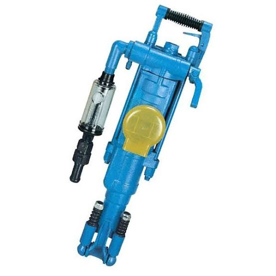
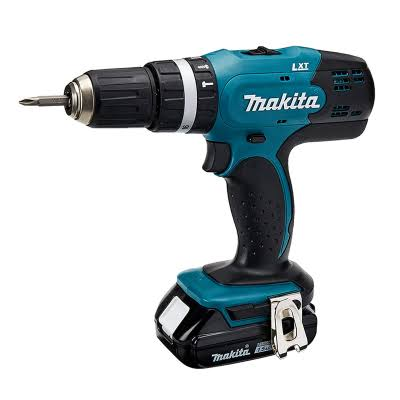
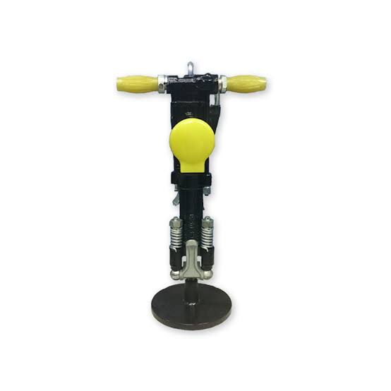

Perforadora YT27
La YT27 es una perforadora neumática ideal para trabajos de minería y perforación en roca. Destaca por su resistencia, eficiencia y fácil manejo, ofreciendo un buen rendimiento en operaciones mineras exigentes.
Descubre nuestra categoría de equipos de perforación. Explora los diferentes tipos de máquinas, sus características y sus aplicaciones en las operaciones mineras.
EXPLORAR EQUIPOS ↓
La YT27 es una perforadora neumática ideal para trabajos de minería y perforación en roca. Destaca por su resistencia, eficiencia y fácil manejo, ofreciendo un buen rendimiento en operaciones mineras exigentes.

La máquina Bosch para minería está diseñada para realizar trabajos exigentes con potencia, resistencia y precisión. Es una herramienta práctica para operaciones mineras, perforación y mantenimiento, ofreciendo un rendimiento confiable y eficiente.

El rotomartillo Makita ofrece potencia, resistencia y precisión para trabajos de perforación en concreto, roca y otros materiales. Es ideal para minería y construcción, brindando eficiencia y durabilidad en trabajos exigentes.

El pistón de avance es un componente esencial para el funcionamiento de equipos de perforación minera. Está diseñado para proporcionar un avance eficiente y preciso, ofreciendo resistencia y durabilidad en trabajos exigentes.

La YT18 es una perforadora neumática utilizada en trabajos de minería y perforación en roca. Se caracteriza por su diseño compacto, resistencia y facilidad de manejo, ofreciendo eficiencia y rendimiento en operaciones mineras.
Contáctanos para consultar disponibilidad, modelos, especificaciones y precios.